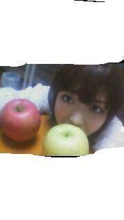
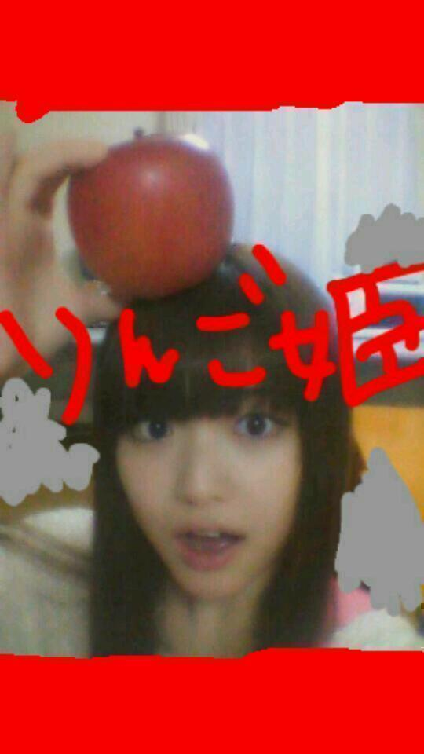

2012/1127Tueりんごジェネレーションっ(o・・o)
こんばんごっっ(o・・o)
さゆりんごっ(o・・o)
突然だか！
帰宅後、何気無く観ていたＴＶから
まつむらは
衝撃的な事実を知った！！！！
日本のみなさんが
果物を食べていないと！
日本の果物がやばいと！！
特にりんご離れが大変やと！！！
んなぁんだぁってー！Σ（￣□￣;）
甘い蜜たっぷりの林檎が
ご賞味されてないやとーーーーーーーーーーーーーーーーーーーーーーーーーーーーーーーーーーーーーーーーーー！！！！！！！！！
まっちゅんショックよ！！
オイルショックならぬ
松村りんごショックよ！！！！
ってなわけで
林檎食べよう運動
略して
「林活」するぞ！！
みなさん！林檎食べよう！

林檎甘いよ！
美味しいよ！
りんご姫もよろしくね！

日本の果物おいしいで！
生で食べなきゃダメらしいんよ！
農家の方は愛情こめて
つくってくださってる！
ありがとうございますー(ｏ・ω・)ノ))
まっちゅんも毎日
りんご食べんよ！
一日一林檎
一さゆりんご！
果物の魅力よ
ひろまれー(>_<)！
林活頑張るぞ！
さよなら林檎ーっ(o・・o)
2012/11/27 02:06
コメント(630)
りんご食べたい！
てか最近なまら更新してんなw
でも果物はみかん派だな←
てか最近なまら更新してんなw
でも果物はみかん派だな←
僕はさゆりんごの事は好きだけど
梨派です ごめんなさい
梨派です ごめんなさい
やあ！初めまして！
リンゴ姫、
一緒にリンカツしましょうww
リンカツには
思わず吹いたwww
相変わらず
天才的ネーミングセンスだねw
方向転換めっちゃはまったしw
これからも
面白い言葉発表頼む(*^^*)
おやすみなさいです(^-^)/
リンゴ姫、
一緒にリンカツしましょうww
リンカツには
思わず吹いたwww
相変わらず
天才的ネーミングセンスだねw
方向転換めっちゃはまったしw
これからも
面白い言葉発表頼む(*^^*)
おやすみなさいです(^-^)/
林活やったる～(*^^*)
まっちゅんは好きだぞ～♪
林檎も好きだぞ～
頑張るぞ～＼(^o^)／
まっちゅんは好きだぞ～♪
林檎も好きだぞ～
頑張るぞ～＼(^o^)／
松村さんいつもお疲れ様です(^-^)/
林檎美味しですよね！！僕もめっちゃ好きです！
今は仕送りでみかんならめっちゃあるんですけど林檎がないです！(´Д` )
なので一日一林檎はできないけど、いちさゆりんご！なら出来ます笑
・・・んっ！？
いちさゆりんごって何すればいいんだ？笑
これからも頑張って行きましょう！
林檎美味しですよね！！僕もめっちゃ好きです！
今は仕送りでみかんならめっちゃあるんですけど林檎がないです！(´Д` )
なので一日一林檎はできないけど、いちさゆりんご！なら出来ます笑
・・・んっ！？
いちさゆりんごって何すればいいんだ？笑
これからも頑張って行きましょう！
りんご大好き♪
まっちゅんやなくて
果物の方やけど(笑)
でもまっちゅんの事も
応援しちょんよヽ(￣▽￣)ノ
まっちゅんやなくて
果物の方やけど(笑)
でもまっちゅんの事も
応援しちょんよヽ(￣▽￣)ノ
姫、かしこまりました
一日一林檎ですね
一日一林檎ですね
りんご姫
かわいいな
かわいいな
お疲れさまー
確かに林檎食べてないな(*_*;
むくのがめんどいんかな…
さゆりんごならどんだけでも食べれるのにな♪
オリジナルブランドでさゆリンゴ作ったら？(笑)
確かに林檎食べてないな(*_*;
むくのがめんどいんかな…
さゆりんごならどんだけでも食べれるのにな♪
オリジナルブランドでさゆリンゴ作ったら？(笑)
こんばんは！笑
プーさんなう〜♡
俺はリンゴよりイチゴだな(＊´･w･`)←あ
☆☆☆☆☆☆プーさん☆☆☆☆☆☆
プーさんなう〜♡
俺はリンゴよりイチゴだな(＊´･w･`)←あ
☆☆☆☆☆☆プーさん☆☆☆☆☆☆
そりゃ大変やぁ！(ﾟﾛﾟ)
りんご姫
推し変されてんの？(笑)
みんなりんご食わんとなに食っとんねん！(ﾟДﾟ;)
りんごは今日も食べたよ(^-^)
ついでに、いちごも食べたよ( ´艸｀)
りんごは……ちょっと蜜が少なかったよぉ(>_<)
まっちゅんの蜜、注入してくれ(≧∇≦*)
りんご姫
推し変されてんの？(笑)
みんなりんご食わんとなに食っとんねん！(ﾟДﾟ;)
りんごは今日も食べたよ(^-^)
ついでに、いちごも食べたよ( ´艸｀)
りんごは……ちょっと蜜が少なかったよぉ(>_<)
まっちゅんの蜜、注入してくれ(≧∇≦*)
さゆりん(*^^*)
こんばんは☆
まさるん.
林活
頑張ります(^^ゞ
まさるん.
林檎大好きだから
さゆりん(o・・o)
大好きだから(*^^*)
りんご姫も
いーっぱい
林檎食べてください
一日一林檎
一さゆりんご(o・・o)!!
今日も1日
お疲れさまです
明日も
キラキラの
さゆりん(o・・o)スマイル
いーっぱい
咲かせてください
まさるん.より
こんばんは☆
まさるん.
林活
頑張ります(^^ゞ
まさるん.
林檎大好きだから
さゆりん(o・・o)
大好きだから(*^^*)
りんご姫も
いーっぱい
林檎食べてください
一日一林檎
一さゆりんご(o・・o)!!
今日も1日
お疲れさまです
明日も
キラキラの
さゆりん(o・・o)スマイル
いーっぱい
咲かせてください
まさるん.より
りんごより梨しか～～～笑
一日一梨！！！
梨推します！！！笑
最近はゆっくり休めてんの？
そこは心配・・・＞＜
さかちょん
ごめん…俺、りんごあんま好きじゃないわ；（ジュースは好き♪）
甘い蜜がたっぷり入っていて、さらに冷蔵庫で冷やした状態のならそこそこ美味しいと思うけど…
りんごはりんごでも、さゆりんごは大がいくつあっても足りないぐらい好きだけどねー(￣∀￣+)キラーン
甘い蜜がたっぷり入っていて、さらに冷蔵庫で冷やした状態のならそこそこ美味しいと思うけど…
りんごはりんごでも、さゆりんごは大がいくつあっても足りないぐらい好きだけどねー(￣∀￣+)キラーン
毎日じゃないけど
りんご 食べてるよ。
一日一個りんご食べると
医者いらずって言われているん
だよね。


りんご 食べてるよ。
一日一個りんご食べると
医者いらずって言われているん
だよね。
さゆりんこんばんはー( ´ ▽ ` )ﾉ
初めてコメします(o^^o)
最近のさゆりん、あ、りんご姫のブログ毎回面白くて笑ってしまうw
今も寝ようとしたらりんごブログで声出して笑ってしまった(￣▽￣)
俺もたまには林活してみまーすd(￣ ￣)
また面白くて和むブログ楽しみにしてるねー(o^^o)
初めてコメします(o^^o)
最近のさゆりん、あ、りんご姫のブログ毎回面白くて笑ってしまうw
今も寝ようとしたらりんごブログで声出して笑ってしまった(￣▽￣)
俺もたまには林活してみまーすd(￣ ￣)
また面白くて和むブログ楽しみにしてるねー(o^^o)
こんばんは。最近更新頑張ってますね。
りんごって美味しいですよね。自分もりんごは大好きです。
ドイツはりんごをよく食べる国で、道端で丸かじりしている人をよく見ます。
ちょっと林の中に入れば、野性のりんごがぽろぽろ落ちてますし。
あとりんごケーキとかりんご酒とかもいろいろあって、種類も豊富です。
ちょっと日本のとは違う種類のりんごも多いんですよ。
さゆりんに食べさせてあげたら喜ぶだろうなと、
こちらでりんごを食べるたびに思います。
「林活」自分も及ばずながら協力しますよ。笑
しかしオイルショックとかよく知ってますね。
変なところで感心してしまいました。
りんごって美味しいですよね。自分もりんごは大好きです。
ドイツはりんごをよく食べる国で、道端で丸かじりしている人をよく見ます。
ちょっと林の中に入れば、野性のりんごがぽろぽろ落ちてますし。
あとりんごケーキとかりんご酒とかもいろいろあって、種類も豊富です。
ちょっと日本のとは違う種類のりんごも多いんですよ。
さゆりんに食べさせてあげたら喜ぶだろうなと、
こちらでりんごを食べるたびに思います。
「林活」自分も及ばずながら協力しますよ。笑
しかしオイルショックとかよく知ってますね。
変なところで感心してしまいました。
こんばんわ( ´ ▽ ` )ﾉなり
さゆりん安心して！
俺は毎日のように林檎ご賞味してるから！
これ日本語おかしいかな？
林檎姫可愛すぎやろ\(//∇//)\
てことで明日から林檎食べまっさー。
んじゃおやすみ( ´ ▽ ` )ﾉ
さゆりん安心して！
俺は毎日のように林檎ご賞味してるから！
これ日本語おかしいかな？
林檎姫可愛すぎやろ\(//∇//)\
てことで明日から林檎食べまっさー。
んじゃおやすみ( ´ ▽ ` )ﾉ
こんばんわ(^-^)/さゆりん!!
自分は林檎めっちゃ好きだよ♪
丸ごと一個食べたときは最高だったね(*´∀｀)
自分は林檎めっちゃ好きだよ♪
丸ごと一個食べたときは最高だったね(*´∀｀)
さゆりんごー!!
林活がんばれー(>_<)
うちにもリンゴ50個くらい大量にあるぞっ、この前1日に3個食べたぞっヾ(^▽^)ノ笑
これで林活生にいれてもらえるかしら!?
年明け個握で会いに行くからねーヽ(^^)
だいちゃんφ(．_．)
林活がんばれー(>_<)
うちにもリンゴ50個くらい大量にあるぞっ、この前1日に3個食べたぞっヾ(^▽^)ノ笑
これで林活生にいれてもらえるかしら!?
年明け個握で会いに行くからねーヽ(^^)
だいちゃんφ(．_．)
まっちゅーんりんごアレルギーの俺はどーすればいいのー(T ^ T)？
マジすか？
林檎食べないと！
林檎食べないと！
こんばんりんご！
番組見ましたよ！
りんご育てるのに、すっごい手間かかるんや。
しらんかったわーー。
そんなに一生懸命育てても、台風で全滅したり、大変や。
本当に、りんご育てるのには苦労が必要なんやな。
りんご、りんご、・・・。
さゆりんご育てるのも大変かなあ。
さゆりんご育成ゲームやってみたい！！
でも、ぎんなん育ててぼろ儲け（！）してみたい！
おやすみりんご。
番組見ましたよ！
りんご育てるのに、すっごい手間かかるんや。
しらんかったわーー。
そんなに一生懸命育てても、台風で全滅したり、大変や。
本当に、りんご育てるのには苦労が必要なんやな。
りんご、りんご、・・・。
さゆりんご育てるのも大変かなあ。
さゆりんご育成ゲームやってみたい！！
でも、ぎんなん育ててぼろ儲け（！）してみたい！
おやすみりんご。
さゆりんこんばんは
林檎ジェネレーション計画乗りました！
積極的に消費します！
友人やら会社やらでも発信します！
林檎ジェネレーション計画乗りました！
積極的に消費します！
友人やら会社やらでも発信します！
まっつん！こんばんは！
リンゴに関しての反応はやすぎー！
若い子の果実離れは深刻だねー。
まっつん、リンゴ大使にでも立候補しちゃえばー？
奇跡のリンゴ、喰べてみたいねー！
リンゴに関しての反応はやすぎー！
若い子の果実離れは深刻だねー。
まっつん、リンゴ大使にでも立候補しちゃえばー？
奇跡のリンゴ、喰べてみたいねー！
こんばんは！松村さま～(^_^)v
お久しぶりです！お元気してますかー？
まっちゅんをなかなか拝見することがなくて寂しいです(;つД｀)乃木どこくらいしか見れませんもん。
月曜から夜更かしですよね？僕もさっき見てました！あの番組最近はまりまして、かかさず見ております。
たしかに、生のまま果物食べないですねっ。ゼリーてか多いですわ。
銀杏が時給一番高いなんて～臭いのに！！(*^^*)
では、お休みなさい。
お久しぶりです！お元気してますかー？
まっちゅんをなかなか拝見することがなくて寂しいです(;つД｀)乃木どこくらいしか見れませんもん。
月曜から夜更かしですよね？僕もさっき見てました！あの番組最近はまりまして、かかさず見ております。
たしかに、生のまま果物食べないですねっ。ゼリーてか多いですわ。
銀杏が時給一番高いなんて～臭いのに！！(*^^*)
では、お休みなさい。
おおぉ、りんご姫更新ハイペース！
よし、おいらも「林活」参加しまっせ。
日本国民よ、林檎を食べましょう！
まずは自分が率先して明日から食べるぜぃ。
よし、おいらも「林活」参加しまっせ。
日本国民よ、林檎を食べましょう！
まずは自分が率先して明日から食べるぜぃ。
林檎ってそんな毎日
食うもんじゃなくね(−_−＃)？
オレとか1人暮らしやで
なおさら食わんし(￣ー￣)
さゆりんごですら
毎回じゃなくていいかも(￣▽￣)わら
とか言いつつ毎日さゆりんごには
救われてるけどψ(｀∇´)ψ
なんでできるだけ林活頑張るよψ(｀∇´)ψ
ほなお休み(_ _).｡o○
食うもんじゃなくね(−_−＃)？
オレとか1人暮らしやで
なおさら食わんし(￣ー￣)
さゆりんごですら
毎回じゃなくていいかも(￣▽￣)わら
とか言いつつ毎日さゆりんごには
救われてるけどψ(｀∇´)ψ
なんでできるだけ林活頑張るよψ(｀∇´)ψ
ほなお休み(_ _).｡o○
さーちゃんがやるなら俺もやる。笑
一日一林檎！
一日さゆりんご！
林檎よりメインはさゆりんごで頑張ります＼(^o^)／
にしても、林檎大好きな俺からしたら林檎離れは意外すぎる(T . T)
でも、俺はアップルパイが好きやで生で食べることは少ないな。
やで、これからはアップルパイ禁止令や(｡-_-｡)
さーちゃんのせいでアップルパイが食べれんなんて、つらたんやぁ。。。笑
でも、林檎のためや。
さゆりんごのためや。
頑張るぞ！笑
一日一林檎！
一日さゆりんご！
林檎よりメインはさゆりんごで頑張ります＼(^o^)／
にしても、林檎大好きな俺からしたら林檎離れは意外すぎる(T . T)
でも、俺はアップルパイが好きやで生で食べることは少ないな。
やで、これからはアップルパイ禁止令や(｡-_-｡)
さーちゃんのせいでアップルパイが食べれんなんて、つらたんやぁ。。。笑
でも、林檎のためや。
さゆりんごのためや。
頑張るぞ！笑
さゆりん☆
りんご買わねば
そして食べねば！だね
昔はお母さんが剥いてくれていたから当たり前に食べていたけど、私も今は3人の母
面倒臭がらず剥いてあげないとね
さゆりんもビタミンCたくさんとって、風邪ひかないようにね
☆きょーこ☆
ついさっきおもいで記事みて泣いたコメ送ったのに！
この記事観て大笑いww
バイトで青果部居たんで果物の魅力はよく判ります☆
林檎もちょっとずつずれて色んな種類出てきますしね(・∀・)
冷蔵庫のキャパ小さいから果物保存するスペース確保ムズカスイ…
……まっつん、リンゴの皮むきってできるのん？(・ω・)
丸かじりでも美味しいね！
この記事観て大笑いww
バイトで青果部居たんで果物の魅力はよく判ります☆
林檎もちょっとずつずれて色んな種類出てきますしね(・∀・)
冷蔵庫のキャパ小さいから果物保存するスペース確保ムズカスイ…
……まっつん、リンゴの皮むきってできるのん？(・ω・)
丸かじりでも美味しいね！
只今、夜勤中！
そういえば、家にリンゴあったので帰ったら、リンゴ食べます！
そういえば、家にリンゴあったので帰ったら、リンゴ食べます！
いいブログだわ。
こんばんは♪
自分もなるべく林活します!!(笑)
明日も頑張ってください(^-^)
では、お休みなさい(-.-)Zzz・・・・
林活やらせていただきます(￣^￣)ゞ
たまにしか食べてなかったからなぁー
りんご姫に言われたらやるしかない‼‼笑
リンゴ美味しいっスよね(￣▽￣)
俺も果物食べないと直ぐに風邪になっちゃう体質なんで毎日リンゴ食べてるんスよ！ww
俺も果物食べないと直ぐに風邪になっちゃう体質なんで毎日リンゴ食べてるんスよ！ww
まっつん！
前から思っててんけどなー
ほんまにリンゴ好きなん？？
林活するぞーつって散々煽ってからに、最後の〆がさよなら林檎ーって‥どないやなー
しかし！そんなテキトーな毒りんご姫まっつんを推す気持ちは変わらんよ！
たぶん(･∀･)！
とりあえず明日林檎食べるわなー！
まっつんりんご丸かじりせんと、そろそろ皮むけるよーなりやー♪
前から思っててんけどなー
ほんまにリンゴ好きなん？？
林活するぞーつって散々煽ってからに、最後の〆がさよなら林檎ーって‥どないやなー
しかし！そんなテキトーな毒りんご姫まっつんを推す気持ちは変わらんよ！
たぶん(･∀･)！
とりあえず明日林檎食べるわなー！
まっつんりんご丸かじりせんと、そろそろ皮むけるよーなりやー♪
了解っす！
林活！
林活！
目指せ、リンゴ・クイーン。
でも、りんご料理はできないんじゃ…
でも、りんご料理はできないんじゃ…
林檎の甘い蜜はたまらん
うまい美味しい
りんご姫もたまらん
可愛い
うまい美味しい
りんご姫もたまらん
可愛い
さゆりんの言うとおりだ
りんご美味しいのにねー
俺はリンゴ好きで―
ま、まあ、さ、さゆりんごのほうが好きじゃけど照
おれも「林活」協力するよ
もっとリンゴを食べてもらうために
ではこのへんで
さゆりんご大好きー
りんご美味しいのにねー
俺はリンゴ好きで―
ま、まあ、さ、さゆりんごのほうが好きじゃけど照
おれも「林活」協力するよ
もっとリンゴを食べてもらうために
ではこのへんで
さゆりんご大好きー
さゆりんブログ更新遅いよぉ(≧ヘ≦)
でも起きてるのだ(*^ω^*)
俺もリンゴあんまり食べないわ(>_<)
だから握手会の時にリンゴの美味しさ教えて(。・ω・。)ノ
でも起きてるのだ(*^ω^*)
俺もリンゴあんまり食べないわ(>_<)
だから握手会の時にリンゴの美味しさ教えて(。・ω・。)ノ
林活するぞー＼(^-^)／
ぼくもりんご食べるようにします(o^∀^o)
ぼくもりんご食べるようにします(o^∀^o)
最近更新多くて嬉しいです♪
りんご美味しいよね！
さゆりんごは楽しいよね！w
初めてコメントします(*^^*)
とりあえずさゆりんめちゃくちゃ可愛い 顔も声も関西弁も
☆*:.｡. o(≧▽≦)o .｡.:*☆
自分もりんご食べますね☆
さゆりんはリンゴスター
とりあえずさゆりんめちゃくちゃ可愛い
☆*:.｡. o(≧▽≦)o .｡.:*☆
自分もりんご食べますね☆
さゆりんはリンゴスター
さゆりんキターーー！！
めっちゃブログ更新してるねー＼(^o^)／
流石気まぐれ王女(^ ^)
林檎離れ大変やね(T_T)
さゆりんがりんご姫として頑張らなな(^ ^)
ていうか
りん活略してなーーいww
もし略すならりん運とかやなΣ（ﾟдﾟlll）
呼びにくいけど…
それじゃああっきーはテスト勉強がんばりんご♫
おやすみぃ
大分のあっきーより
梨の方が美味いし＼(^∀^)／
バイバイ
まっつんこんばんご。
そういえば林檎最近食べてへんな〜。
今日から食べるようにします(･_･;)
さゆりんごパクパク！て違うか？
ほなら、またな〜
そういえば林檎最近食べてへんな〜。
今日から食べるようにします(･_･;)
さゆりんごパクパク！て違うか？
ほなら、またな〜
確かに果物あまり食べなくなったなぁ…
りんごより桃だろー(笑)
りんごジェネレーション起こそうか！
せらりんごジェネレーションを！←
林檎食べよー
りんごより桃だろー(笑)
りんごジェネレーション起こそうか！
せらりんごジェネレーションを！←
林檎食べよー


応援してます
質問
さゆりんが好きやけめっちゃ応援しまくっていいですか？